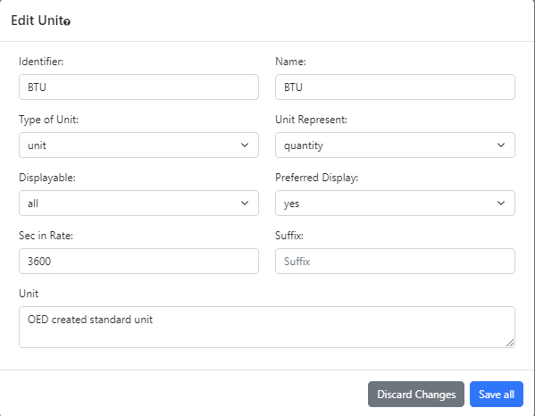

The admin unit editing popup, shown in the following figure, allows admin users to editing an existing unit on an OED site. It is accessed from the admin unit viewing page by clicking the "Edit Unit" button at the bottom of each unit card.
All information shown on this page is based upon the help example.
The input values are similar to those described for creating units. One difference is that the current values for the input will be shown rather than the default values and the default values will only apply to some inputs if the input is cleared. The two buttons at the bottom of the popup act similarly.
Changing the type of a unit after a conversion exists with the unit will cause issues within OED. As a result, this should not be done. The next release of OED will not allow changing of the unit type.
Saving a unit requires a change to the OED database that necessitates a refresh of the web browser window to show the admin the updated information. As a result, all the currently selected meters/groups/language, etc. will be lost and the page shown will be the main OED graphic page. OED plans to eliminate the need for doing this in the future so one would remain on the units page.
If a suffix for a unit is changed or removed then the original suffix units created to support the suffix unit will remain but their displayable will become none. OED plans to change this to delete the created suffix units when it is possible.